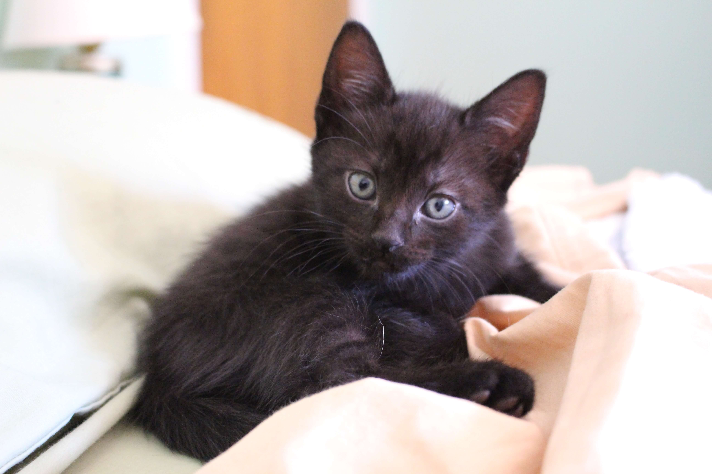

Luna
Luna es una gatita de pelaje negro y brillante como la noche. Sus grandes ojos amarillos destellan curiosidad y ternura. Es juguetona y cariñosa, siempre buscando aventuras y ronroneando suavemente cuando está cerca de ti. Luna se lleva bien con otros gatos y sería una compañera perfecta para llenar tu hogar de alegría.